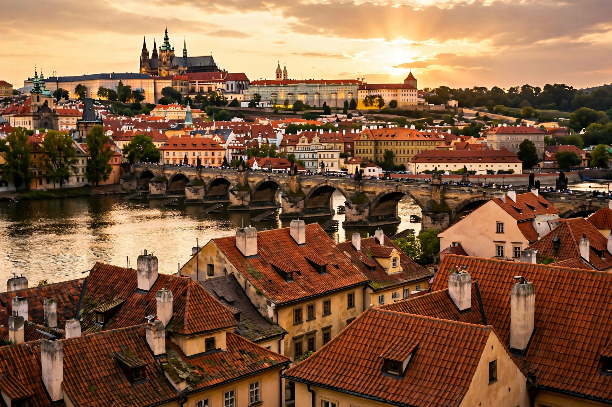

Bohemia (Czech: Čechy) is the westernmost historical region of the Czech Republic, together with Moravia and Czech Silesia forming the Czech lands. Its capital is Prague.
| Bohemia | |
|---|---|
 | |
| Capital | Prague |
| Area | ~52,065 km² |
| Population | ~6.9 million |
Bohemia is a basin surrounded by mountains — the Šumava, Ore Mountains, Krkonoše and Bohemian-Moravian Highlands — drained by the Elbe (Labe) and Vltava rivers.
Named after the Celtic Boii, the region was settled by Slavs, became the core of the Přemyslid duchy and Kingdom of Bohemia, a crown land of the Holy Roman Empire and later Habsburg monarchy. It was central to the Hussite Wars, the Thirty Years' War (beginning with the Battle of White Mountain, 1620), and Czechoslovakia after 1918.
Bohemia is known for beer (Pilsner, Budvar), glassmaking, spa towns such as Karlovy Vary, and composers Dvořák and Smetana. The term "bohemian" for an unconventional artistic lifestyle derives via French association with the region.